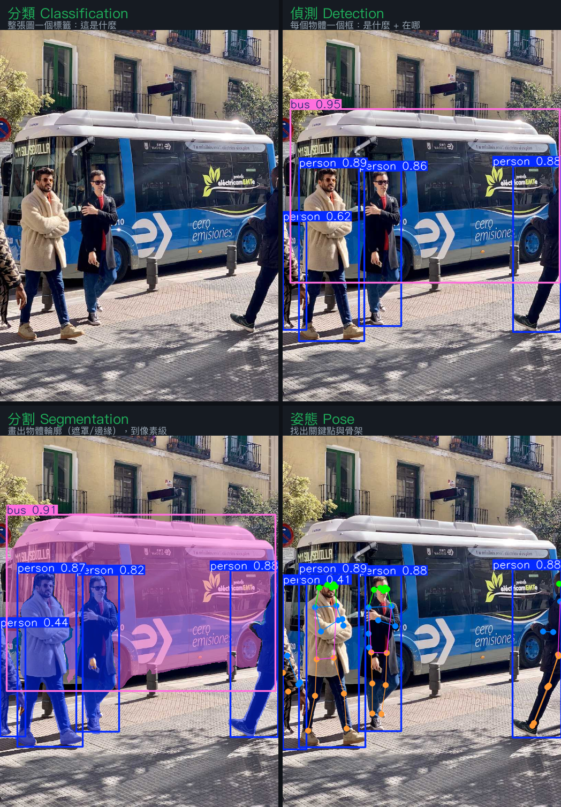
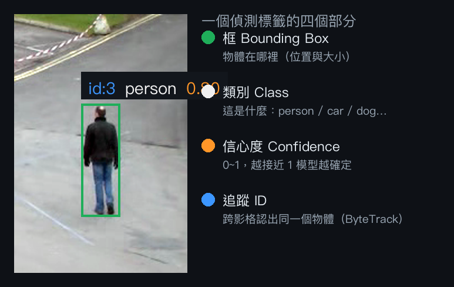

第 2 章
核心理論
「辨識」不只一種。先搞懂四種視覺任務的差別，再看懂一個標籤的組成、偵測怎麼運作、 資料怎麼標，以及怎麼把每幀的框串成軌跡來計數。
四種視覺任務：分類 / 偵測 / 分割 / 姿態
同一張圖，可以問四種不同的問題，輸出也完全不同。這是最常被搞混的地方—— 尤其「框」（偵測）和「物體邊緣」（分割）是兩件事：

| 任務 | 它回答 | 輸出 | 典型用途 |
|---|---|---|---|
| 分類 Classification | 這張圖是什麼 | 一個類別標籤 | 良品/不良品判定 |
| 偵測 Detection | 有什麼、在哪、幾個 | 每個物體一個方框 + 類別 + 信心度 | 計數、車流、監控（本課主軸） |
| 分割 Segmentation | 物體的精確輪廓 | 每個物體一個遮罩/邊緣（像素級） | 面積量測、去背、瑕疵形狀 |
| 姿態 Pose | 身體關鍵點在哪 | 關鍵點 + 骨架 | 動作分析、人因工程 |
YOLO 同一家族就有對應的模型：偵測（n/s/m…）、分割（-seg）、姿態（-pose）、分類（-cls）。第 4 章有偵測與分割的可跑示範。
一個偵測標籤的解剖
偵測結果疊在畫面上時，每個物體會有一個框 + 一行文字。拆開來看就四個部分：

偵測怎麼運作（直覺版）
掃格子 Grid
把圖切成網格，讓每個格子負責「猜這附近有沒有物體、是什麼、框多大」。YOLO 一次過就全部算完。
信心門檻 Confidence
每個預測都有 0~1 的信心度；低於門檻（如 0.35）就丟掉，避免一堆雜訊框。
IoU 重疊度
衡量兩個框重疊多少（交集 ÷ 聯集）。用來判斷「這個框算不算抓對」、也用在下面的 NMS。
NMS 非極大值抑制
同一物體常被框很多次；NMS 用 IoU 把重疊的框只留信心度最高的一個。
前置作業：資料標註（Annotation）
模型要先看過「已標好答案」的圖才會學。標註就是人工告訴模型「這裡有什麼」。 任務不同，標註方式也不同：
偵測 → 方框 (bbox)
框住每個物體並標類別。快、便宜，最常用。
分割 → 多邊形/遮罩 (polygon/mask)
沿著物體輪廓描點。較費工，但拿到像素級邊緣。
常用工具：Roboflow（雲端、最快，資料不敏感首選）、CVAT（可自架，資料敏感用）、Label Studio。 標註品質直接決定模型好壞——「垃圾進、垃圾出」。第 5 章會實際標一批並訓練。
小樣本技巧：先用真實產品圖去背，貼到真實背景上合成大量變化（Copy-Paste 合成），能在沒幾張真圖時就把模型撐起來。
追蹤與計數
偵測是「單張」的。要在影片裡數出幾個、不重複數，得把每幀的框串成軌跡並給穩定 ID——這就是追蹤（本課用 ByteTrack）。 有了穩定 ID，就能做穿線計數：物體軌跡越過一條計數線才 +1，產線計數、來客計數都靠它。